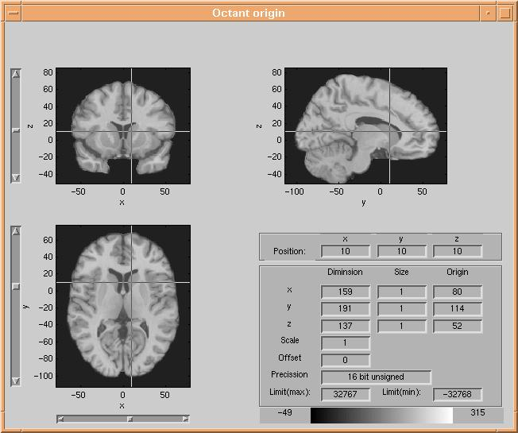
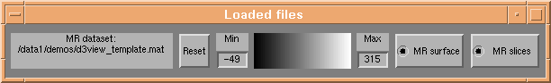
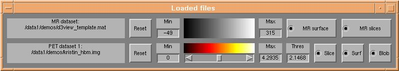

d3view Users tutorial (2): Loading files

Note: Anatomical and functional data MUST be coregistered for production
of understandable graphics.
Loading anatomical data
MR templates created using d3template can
be loaded by pressing the "Open MR template" button of d3view. If you
do not have an MR template, you can use a standard template from the directory
<d3view base dir>/Templates or create your own template from a
standard SPM Analyze image using d3template.
d3template is started from the matlab command prompt, or by pressing
the "Create MR template" button of d3view.
Once the anatomical data have been loaded, the data are presented in the volume
browser (volView):

volView is a common component of several of
the NRU imaging tools. Dataset parameters are presented in the "Loaded files"
window:

Loading fuctional data
For functional data, SPM Analyze format images are used. In principle as many
functional datsets as needed can be loaded, but ofcourse workstation memory sets
a limit. Functional (PET) datasets are loaded by pressing the "Open analyze PET data"
button of d3view.
When a dataset has been loaded, parameters of the dataset will are presented in the "Loaded files" window:

Next tutorial item: Understanding
the imaging problem - anatomy.